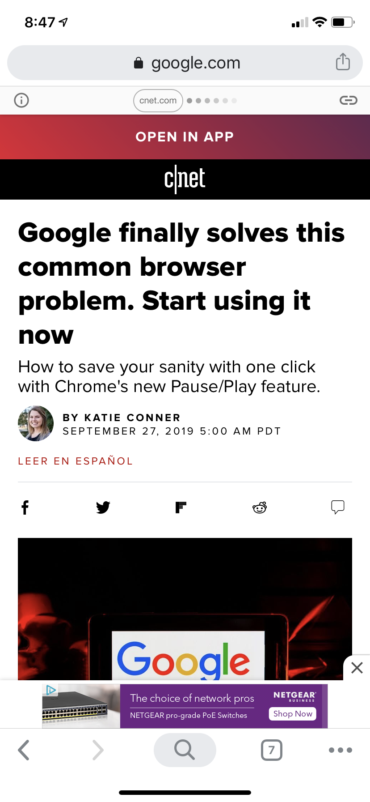

PARC: Proximity
PC Gamer
PC Gamer
PC Gamer shows really well how the layout is for moblie browsers. You can see they care about people who surf the web with the applications used on a smartphone if they don't have an app for it. Proximity shows very well on layout and spacing for the webpage.
PARC: Alignment
One Plus
One Plus

Alignment is meaning that the website is formatted in a way where text or objects are aligned from left, right, centered, or justified. With the OnePlus website, they show that they're able to have a neatly displayed site that doesn't seem overbearing or confusing when reading.
PARC: Repetition
CNET
CNET
Repetition focuses on the website repeating itself. Typically you can see patterns. Like C|Net's website, they show the design of the site mainly in a gradient, black or white. The empty spaces are neatly finished with text. This keeps it interesting for those who view the site.